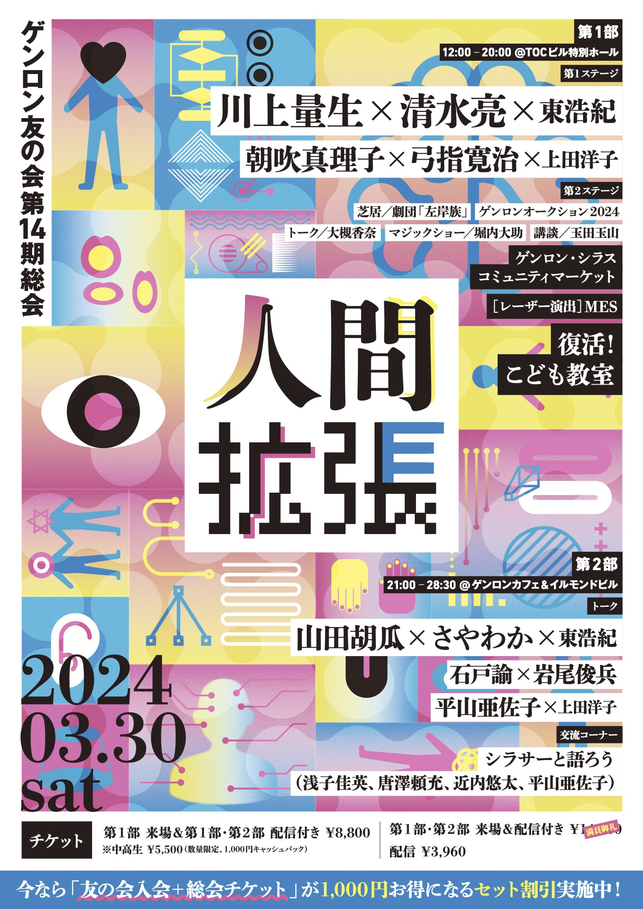

第14期総会
テーマは「人間拡張」。
2024年3月30日から31日早朝にかけて開催されました。会場は13期と同じ五反田TOCビル、ゲンロンカフェ、イルモンドビル（旧オフィス）の3つ。川上量生さん、清水亮さん、朝吹真理子さんら豪華ゲストのトークに加えて、5年ぶりに復活したこども教室「ゆめのみほん市」が好評でした。

友の会には年に1回、会員限定の大きな集会があります。それが第16期で15回目を迎える「総会」です（第3期は未開催）。
トークありパフォーマンスあり展示あり会員の出店あり、ゲンロンの媒体でお馴染みの方が多数集結する、文字どおりのお祭りです。
もちろんゲンロンなので時間もたっぷり。オンラインでも視聴できます。ぜひいちどご参加ください。

メインホール、ギャラリー、バー、エントランス……会場ごとに同時並行で企画が走ります。 タイムテーブルを眺めながら、好きな企画を回遊するのが醍醐味です。

2025年3月22日から23日早朝にかけて開催されました。会場は、CITY HALL & GALLERY GOTANDA、ゲンロンカフェ、シラススタジオ、ゲンロンオフィスの4つ。恒例のトークイベント、こども教室、友の会会員・シラサーの皆様が出店するコミュニティマーケット、総会トレカ交換など、さまざまな企画で大盛り上がりでした！
期間限定で、友の会第16期（ベーシックコース）入会と総会チケットの割引セットをご用意しています。
入会と総会チケットを個別にご購入いただくより、2,200円お得です。まだ会員でないみなさま、ぜひこの機会にご検討ください！
テーマは「人間拡張」。
2024年3月30日から31日早朝にかけて開催されました。会場は13期と同じ五反田TOCビル、ゲンロンカフェ、イルモンドビル（旧オフィス）の3つ。川上量生さん、清水亮さん、朝吹真理子さんら豪華ゲストのトークに加えて、5年ぶりに復活したこども教室「ゆめのみほん市」が好評でした。
テーマは「人間復活」。
2023年3月18日から19日早朝にかけて開催されました。古市憲寿さん、小川さやかさん、星野博美さんなど多彩なゲストをお呼びしたトークはもちろん、初めての試みだった友の会会員の出店エリアが好評で、早朝までたいへんに盛り上がりました。会場に300人以上、オンラインで1000人近くが参加・視聴した過去最大規模の総会です。
テーマは「反SNS戦争」。
2022年6月、コロナ禍の収束を見据えてハイブリッド形式で開催。目玉はシラス配信者によるケーナと生花のパフォーマンス。昼会のエンジニアトーク、深夜のミリオタトークほか、チベット文学やモンゴル事情などの落ち着いた談話も好評でした。
テーマは「反SNS戦争」。
2022年6月、コロナ禍の収束を見据えてハイブリッド形式で開催。目玉はシラス配信者によるケーナと生花のパフォーマンス。昼会のエンジニアトーク、深夜のミリオタトークほか、チベット文学やモンゴル事情などの落ち着いた談話も好評でした。
テーマは「めぐりあい五反田（そら）編」。
2019年12月に開催。コロナ禍前最後の会となりました。この会まで総会は忘年会を兼ねており、寿司が振る舞われ、家族連れも多く参加していました。昼会のメインゲストは漫画家の安彦良和さんです。
テーマは「ミネルヴァの梟は黄昏に飛ぶかも！？」。
2018年12月に開催。東浩紀が直前に会社解散を宣言し、当日会場でも延々と会社批判を繰り返した伝説の会です。詳しくは『ゲンロン戦記』（中公新書）をお読みください。
2017.12
第8期総会：国難突破総会、もしくは地獄──観光から刊行へ
2016.12
第7期総会：動物農場、あるいはトランプの時代の新しい友の会
2015.12
第6期総会：五反田ゲンロン化計画
2014.12
第5期総会：強いつながり：デモだ、豚だ、そしてドストエフスキーだ
2014.02
第4期総会：そして研ぎ澄ましの彼方へ……
2012.01
第2期総会：コンテクチュアズの過去、現在、未来
2011.02
第1期総会：そうかん！
期間限定で、友の会第16期（ベーシックコース）入会と総会チケットの割引セットをご用意しています。
入会と総会チケットを個別にご購入いただくより、2,200円お得です。まだ会員でないみなさま、ぜひこの機会にご検討ください！